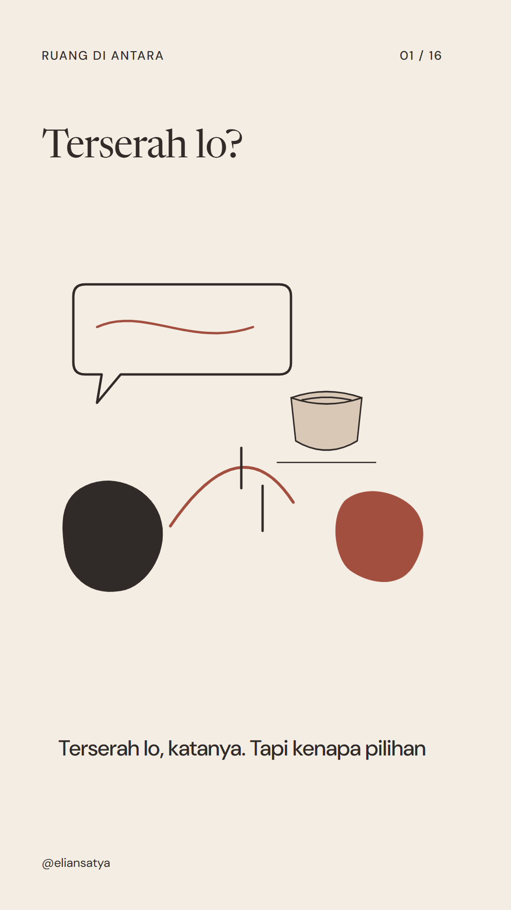
Terserah lo, katanya. Tapi kenapa pilihan yang beda masih terasa salah?
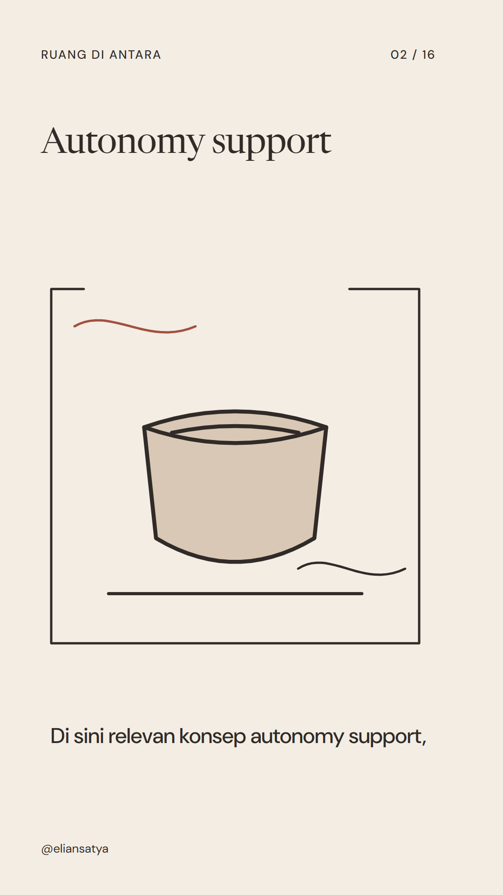
Di sini relevan konsep autonomy support, atau dukungan terhadap otonomi.
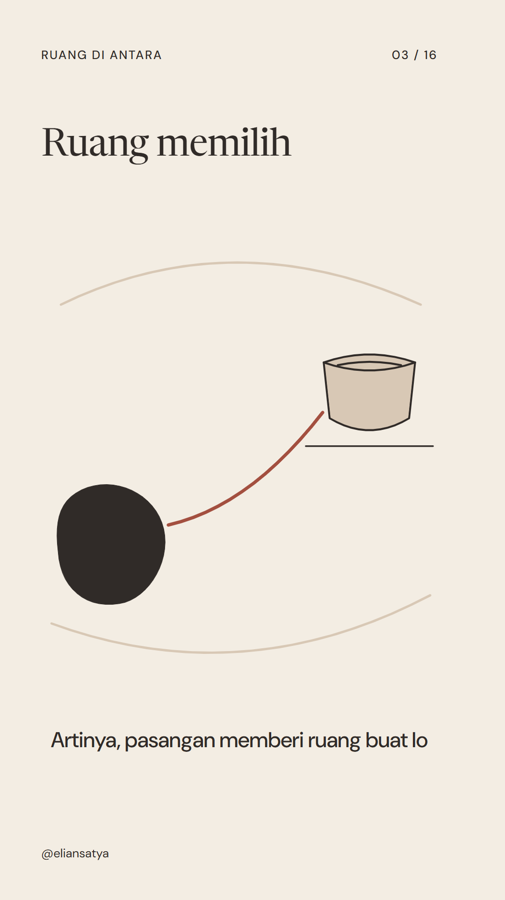
Artinya, pasangan memberi ruang buat lo menyampaikan keinginan dan memilih sesuai nilai lo.
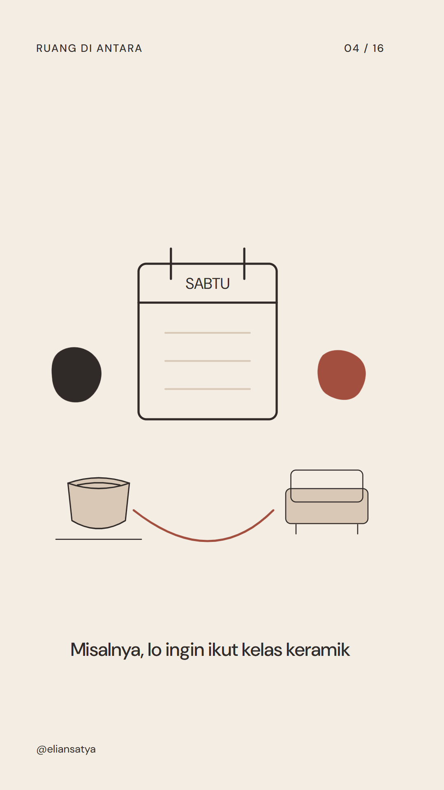
Misalnya, lo ingin ikut kelas keramik setiap Sabtu. Dia lebih suka kalian di rumah.
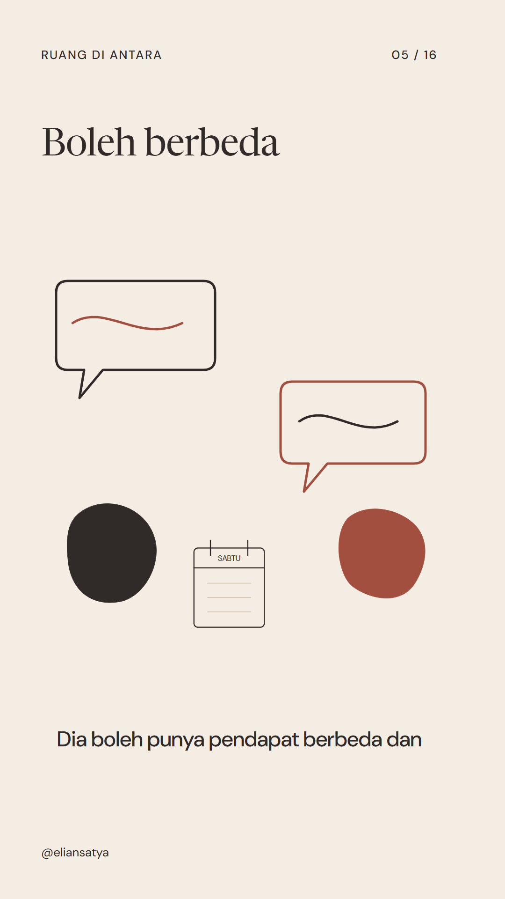
Dia boleh punya pendapat berbeda dan menjelaskan kekhawatirannya.
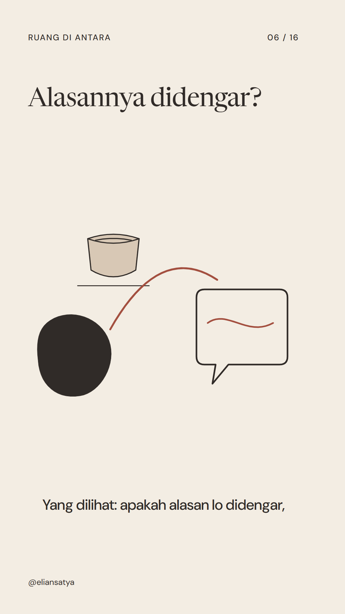
Yang dilihat: apakah alasan lo didengar, dan pilihan lo bisa dibicarakan tanpa tekanan?
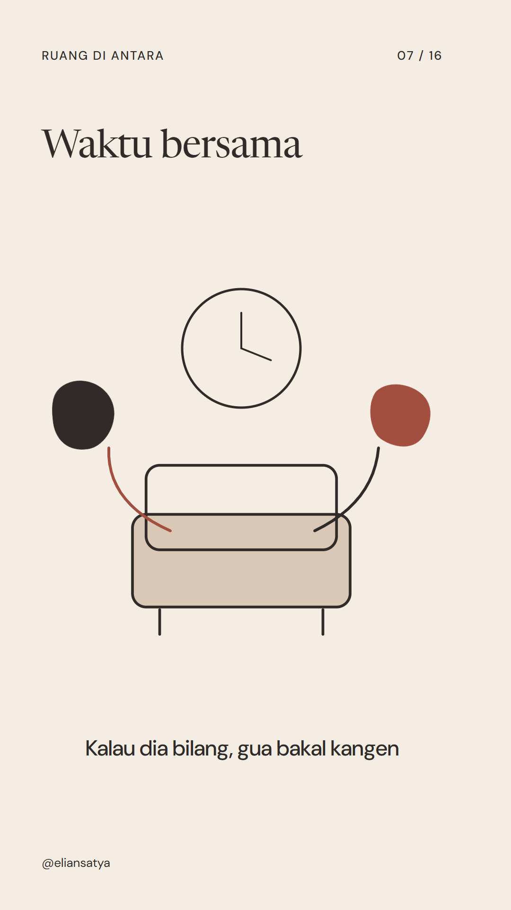
Kalau dia bilang, gua bakal kangen waktu bareng, ada kebutuhan yang bisa kalian bahas.
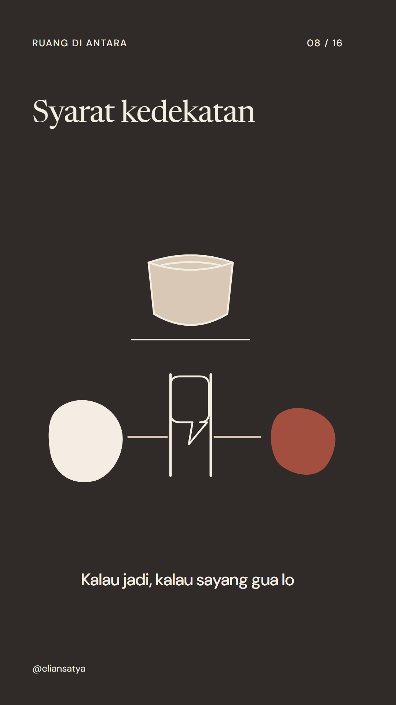
Kalau jadi, kalau sayang gua lo batalin, persetujuan mulai terasa seperti syarat kedekatan.
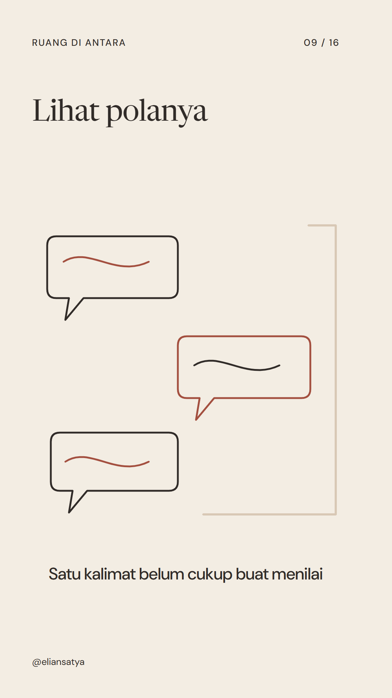
Satu kalimat belum cukup buat menilai seluruh hubungan. Perhatikan pola responsnya.
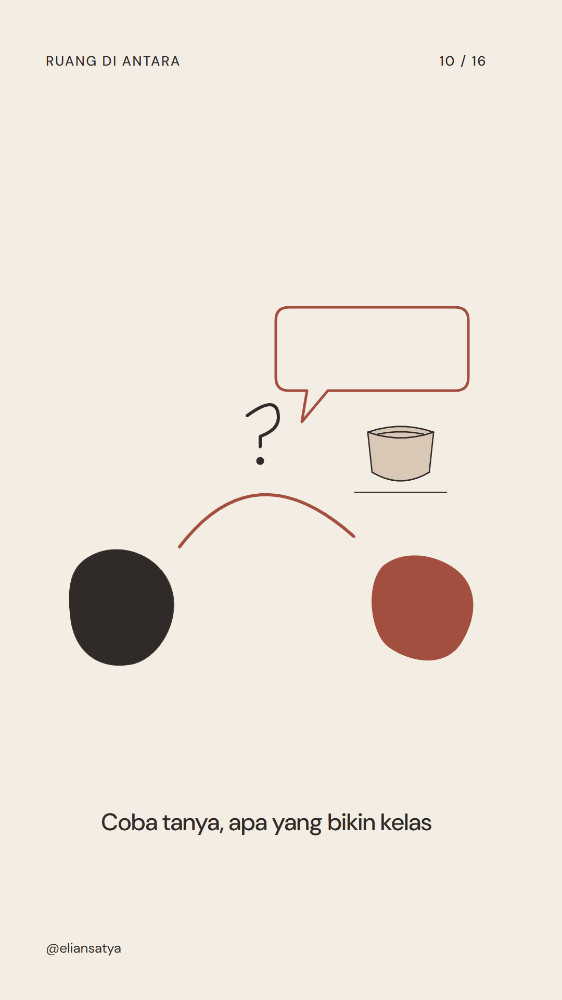
Coba tanya, apa yang bikin kelas itu penting buat lo?
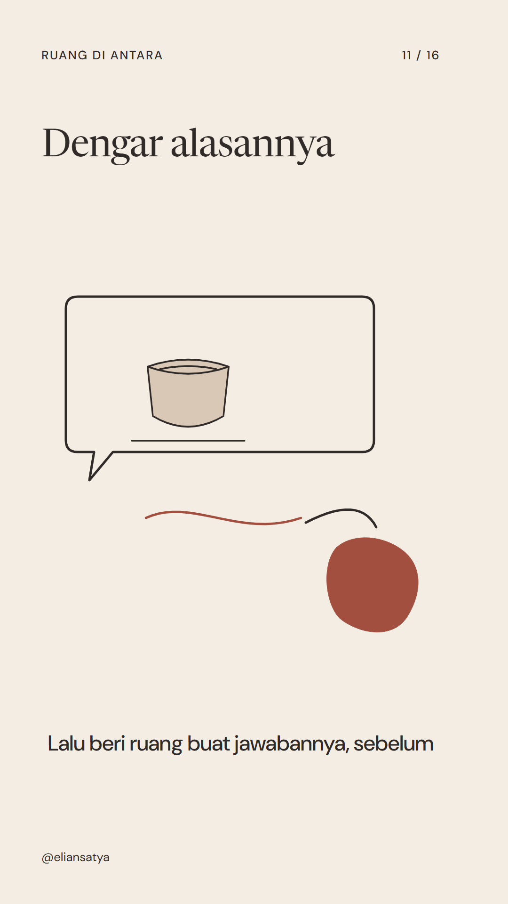
Lalu beri ruang buat jawabannya, sebelum menawarkan pilihan lain.
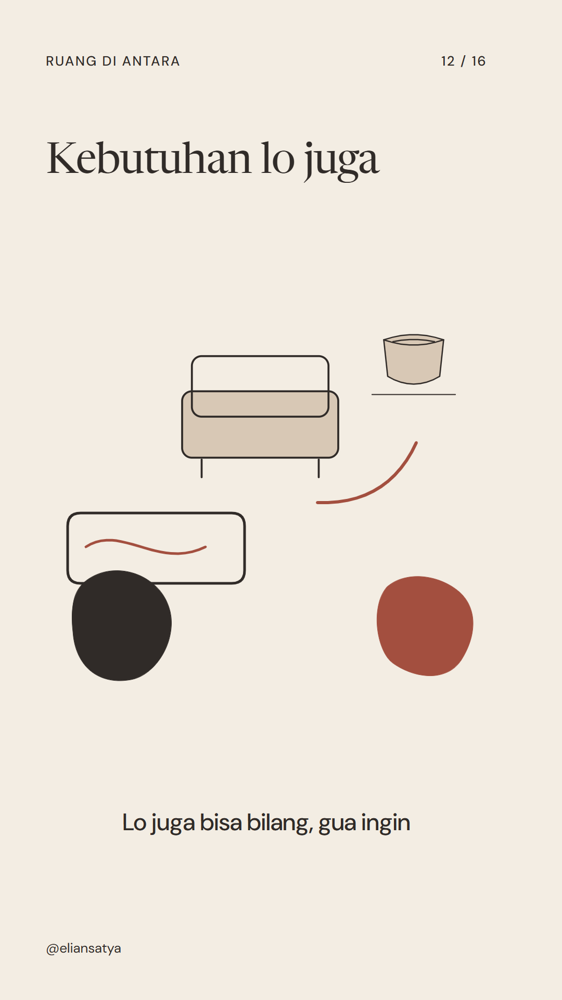
Lo juga bisa bilang, gua ingin tetap punya waktu berdua.
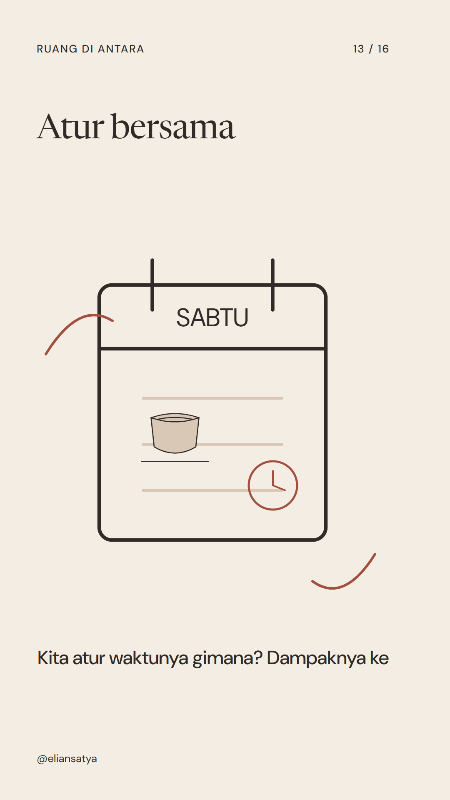
Kita atur waktunya gimana? Dampaknya ke waktu bersama tetap perlu disepakati.
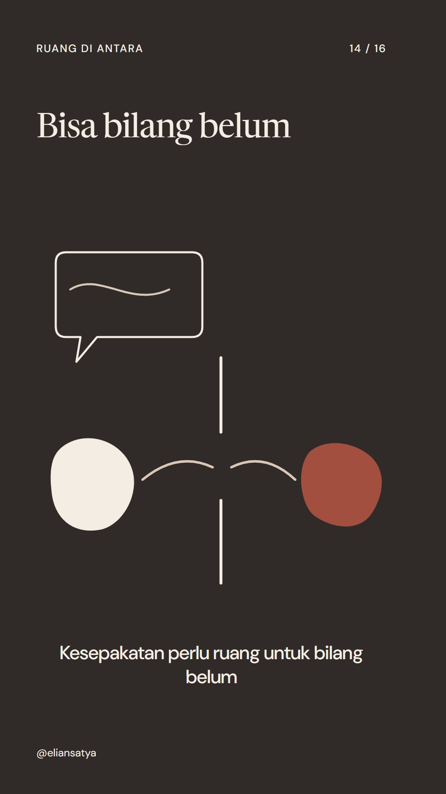
Kesepakatan perlu ruang untuk bilang belum cocok, tanpa ancaman kehilangan kasih sayang.
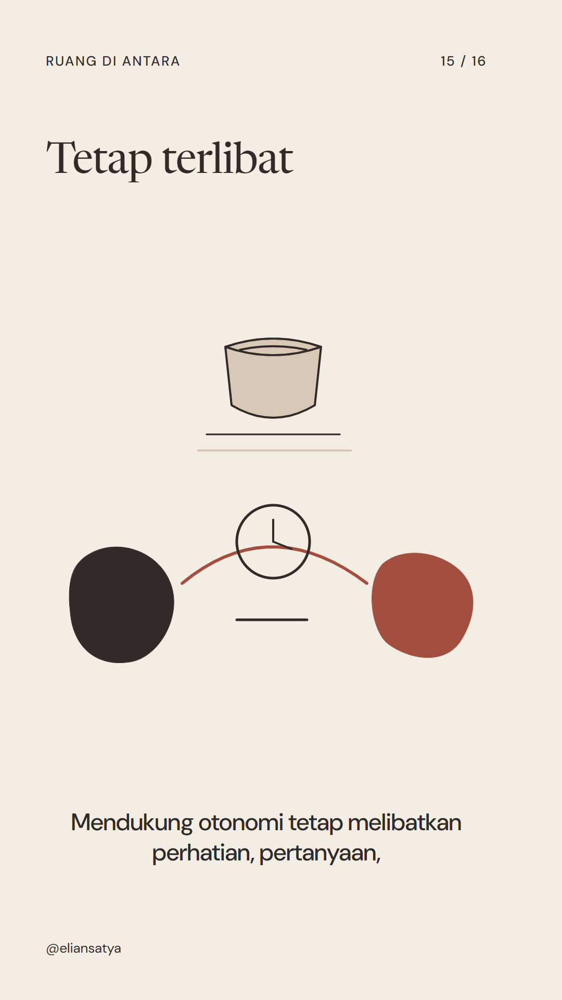
Mendukung otonomi tetap melibatkan perhatian, pertanyaan, dan batas yang jelas.
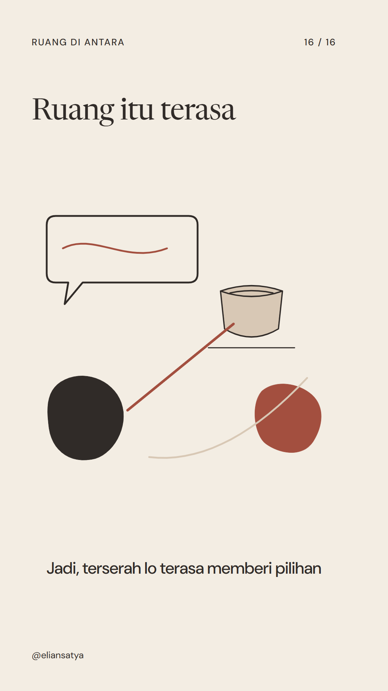
Jadi, terserah lo terasa memberi pilihan kalau respons setelahnya juga menyisakan ruang memilih.